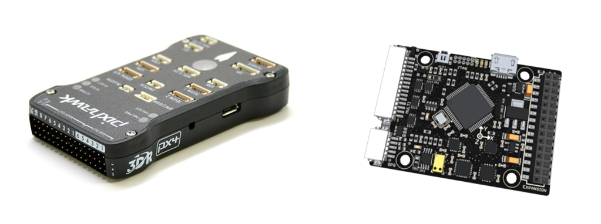
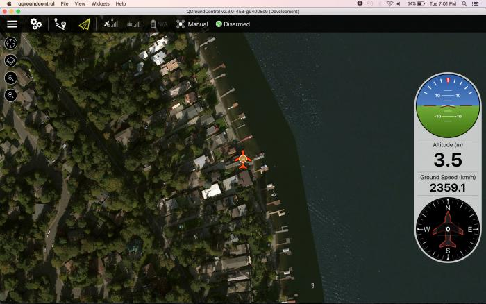
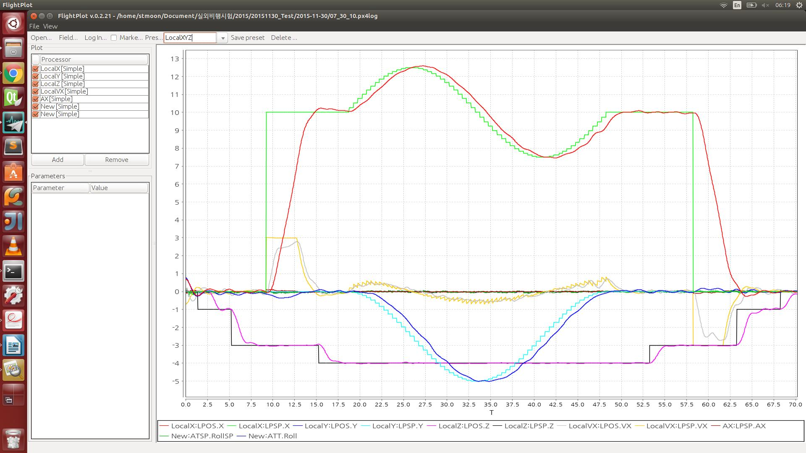
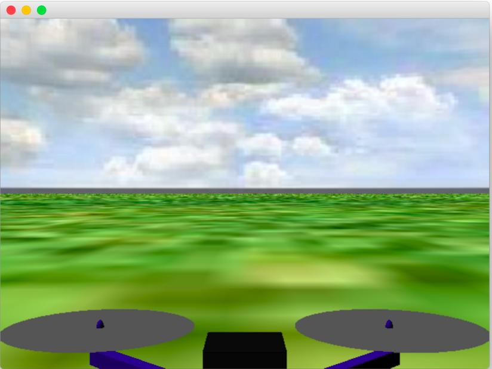
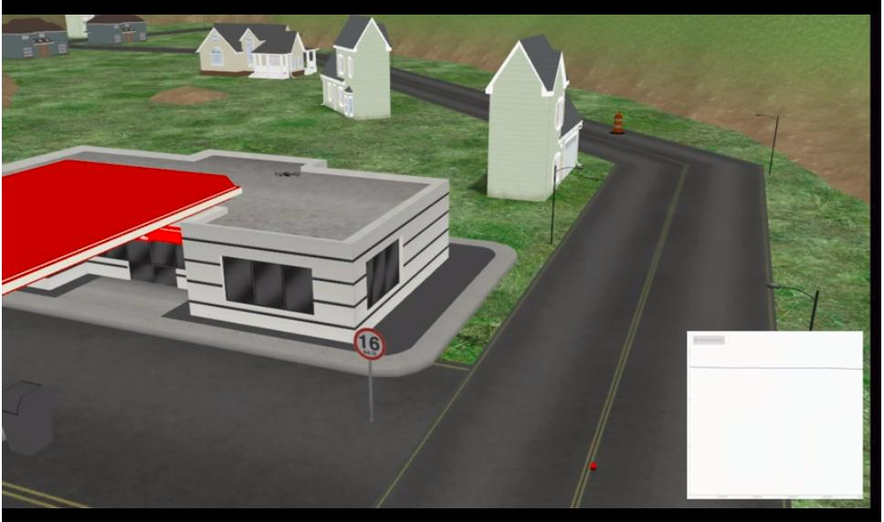
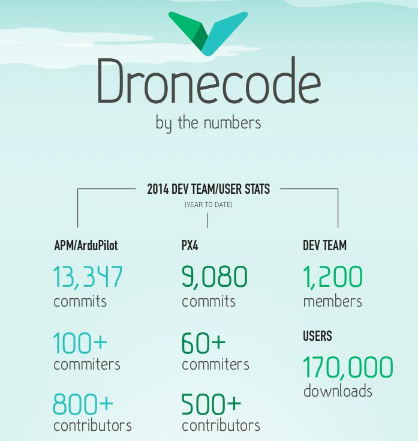

Introduction
Pixhawk를 처음 접하게 된 것은 아마 2013년으로 기억합니다. 그때는 Parrot사의 AR.Drone이 핫~하게 뜨고 있었지요. AR.Drone의 경우 영상을 스마트폰으로 받을 수 있었고, 조종 또한 스마트폰으로 하는 획기적인 제품이었습니다. 사실 지금도 AR.Drone만큼 잘 개발된 드론을 찾아보기 어려울 정도지요. 그 이유는 처음으로 AT*Cmd 라는 프로토콜을 정의해서 오픈했고 WiFi를 주 통신으로 사용하다보니, 쉽게 접근할 수 있었다라는 것이지요. 그 때 당시는 정말 획기적이어서 많은 연구실에서 AR.Drone을 활용했었습니다. 저도 그 당시 열심히 다수의 AR.Drone을 사용하여 위치 인식하고, 제어하는 것을 연구하고 있었구요. 앞에서 말씀드린 것 처럼 많은 부분이 되어 있어서 저는 필요한 부분만 개발하여 동작시킬수 있었습니다. 그런데 한가지 문제가 발생합니다. AR.Drone은 고도 정보를 알기 위해 SONAR 센서를 활용했는데, 저는 고도 정보를 위해 Motion Capture를 사용하고자 했던거지요. 그런데 그 정보는 AT*Cmd에 포함되어 있지 않아서 불가능하게 된 것입니다. 만약 소스코드만 접근할 수 있었으면 어떻게든 해볼건데 그 부분이 막혀 엄청난 시간이 소모하게 된 것입니다[1]. 이게 바로 제가 오픈소스인 Pixhawk에 눈을 돌리게 된 계기였던 것 같습니다.
Spec
제가 기억하기에 Pixhawk가 나오기 전에는 주로 ATmega 기반의 아두이노 기반의 비행제어컴퓨터가 유행이었습니다. 가볍고 코드도 쉬웠고, 어느정도 오픈되어 있었구요. 하지만, 가볍다보니 성능 문제로 인해 복잡한 기능 추가가 정말 힘들었습니다. 그러다가 짜잔하고 나온게 Pixhawk였지요. Pixhawk는 우선 다양한 인터페이스와 CortexM4F로 중무장한 비행제어컴퓨터였던거지요

Pixhawk는 현재 여러가지 종류가 있고, 많은 vender들이 이를 활용하여 새로운 제품을 개발하고 있지만, 표준은 px4fmu-v1과 px4fmu-v2(Pixhawk)입니다. 그림에서는 왼쪽이 v2이고 오른쪽이 v1이네요. 처음에 활용하실때는 px4fmu-v2를 추천합니다. 그 이유는 가장 접근하기 쉽기 때문이지요. 펌웨어 버전 업데이트 같은 것은 별도 장비 없이 micro usb를 통해서 이루어지고, 다양한 인터페이스를 쉽게 활용할 수 있도록 윗부분에 연결 부위가 노출되어 있습니다. 따라서 시리얼 통신이나, I2C와 같은 부분을 쉽게 사용하실 수 있습니다.
자 그럼 전체 스펙을 한번 보시죠. (스펙은 pixhawk 사이트에서 그대로 가져왔습니다.)
- Processor
- 32bit STM32F427 Cortex M4 core with FPU
- 168 MHz
- 256 KB RAM
- 2 MB Flash
- 32 bit STM32F103 failsafe co-processor
- Sensors
- ST Micro L3GD20H 16 bit gyroscope
- ST Micro LSM303D 14 bit accelerometer / magnetometer
- Invensense MPU 6000 3-axis accelerometer/gyroscope
- MEAS MS5611 barometer
- Interfaces
- 5x UART (serial ports), one high-power capable, 2x with HW flow control
- 2x CAN (one with internal 3.3V transceiver, one on expansion connector)
- Spektrum DSM / DSM2 / DSM-X® Satellite compatible input
- Futaba S.BUS® compatible input and output
- PPM sum signal input
- RSSI (PWM or voltage) input
- I2C
- SPI
- 3.3 and 6.6V ADC inputs
- Internal microUSB port and external microUSB port extension
사실 전 전산이 베이스라 하드웨어를 그닥 많이 알지는 못합니다만.. 어찌되었든 그 동안 나왔던 비행제어컴퓨터와는 완전 구별되는 스펙들이었지요.
특히나, Pixhawk 사이트에서 정의한 내용을 보면 고성능 컴퓨터를 이용함과 함께 이를 활용하여 다양한 타입의 비행체에 적용할 수 있었다는 거지요. 뿐만 아니라 로봇 플랫폼도 함께요. Pixhawk를 활용하면 날개달린 비행기 (고정익 비행기), 우리가 주로 알고 있는 멀티콥터 드론, 헬리콥터와 함께 로봇, 자동차, 보트 등 general purpose 형태로 개발이 된 것입니다.
PIXHAWK is a high-performance autopilot-on-module suitable for fixed wing, multi rotors, helicopters, cars, boats and any other robotic platform that can move. It is targeted towards high-end research, amateur and industry needs and combines the functionality of the PX4FMU + PX4IO.
History
자.. 그럼 Pixhawk가 어떻게 만들어진걸 까요. 때는 2009년으로 거슬러 올라갑니다. 2009년 스위스 취리히 대학의 Lorenz Meier 학생은 학교 프로젝트로 드론 개발을 위해 비행제어 시스템을 개발하게 되었습니다. 처음에는 단순하게 시작된 프로젝트는 점점 많은 학생들이 참여하게 되었고, 결국 이 시스템은 컴퓨터 비전 분야에서 사용할 UAV 프렘임워크로 진행되게 되었지요 [2].
이후 Lorenz Meier는 스위스 ETH 취리히 공과대학 Marc Pollefeys 교수의 Computer Vision and Geometry Lab의 합류하면서 본격적인 UAV 프레임워크를 개발하게 됩니다. 놀라운 것은 개발자인 Lorenz Meier가 항공우주가 전공이 아니라는 것이지요. 컴퓨터 엔지니어링을 주로 하던 LorenzMeier가 비행제어컴퓨터를 만든다? 비행제어컴퓨터는 컴퓨터이니깐 컴퓨터 전공과에서 만든다고 하지만, 내부 알고리즘은 어떻게 할려고 하지? 그 당시 Lorenz Meier는 영상 인식하여 위치를 측정하는 연구를 주로 했었는데, 이런 사람이 내부 알고리즘을 만들 수 있었을까요? 물론, 연구실에서 그 부분을 맡아 하는 사람이 있었을 수도 있지만, 중요한 것은 그 연구실은 영상처리 연구실이었다는 거지요. 아마 이런 이유도 Pixhawk를 오픈소스로 접근하게 된 중요한 이유가 아니었을까 싶습니다. 어찌되었든 Pixhawk를 오픈하면서 3DR Robotics라는 드론에서는 꽤 유명한 회사가 Pixhawk를 제품으로 개발하게 되었고, 여러 다른 제품에도 Pixhawk가 들어가게 됩니다. 놀라운 것은 하드웨어 부터 소프트웨어까지 모두 오픈했다는 것입니다. 그것도 BSD 라이센스로요. 결국 아무나 사용하게 만들었고, 그 결과 드론 세계의 판도를 바꾸게 됩니다. 우선 연구자들이 관심을 갖게 되고, 업체에서 개발을 갖게 되고... 결국 전체 생태계(Eco-System)가 구성이 되기 시작한거죠.
Eco-System
소스를 오픈한다?.. 어찌보면 '왜 그런 짓(?)을 하지' 라고 생각들지 않나요? 힘들게 개발한 것을 그냥 공개해버리는 거지요. 근데, 요즘 나오는 소프트웨어를 보면 많은 부분이 오픈되고 있습니다. 요즘 어느정도 결과물이 나오면 오픈하는 경향이 있습니다. (물론 오래전도 그랬지만요) 제가 보기엔 이건 단순 기술 공유가 목적이 아닐 수 있습니다. 어찌보면 기술 종속이 목적일 수 있지요. 상용으로 소스를 공개하지 않은 제품의 경우 비용 문제 때문에 쉽게 접근하기 어렵습니다. 하지만 만약 이와 관련된 유사 기술이 공개 된다면, 어느 누구나 그 기술을 활용하여 새로운 제품을 만들고 싶겠지요. 뿐만 아니라, 이를 활용하는 다수의 개발자들과 소통을 통해 오픈소스의 품질을 높일 수 있어 결국 기존 상용 제품과의 기술격차를 해소할 수 있게 됩니다. 한편, 이렇게 개발된 오픈소스는 다수 개발자와 사용자에 힘입어 기술의 트렌드를 이끌어 갈수 있게 되고, 결국 기술 종속을 불러일으키게 되는게 아닐까 하는게 제 개인적인 견해입니다. (물론 아닐수도 있지만요 ㅋㅋ) 그렇다면 현재까지 개발된 오픈 소스 기술을 활용하여 같은 기능을 가진 기술을 독자적으로 만들면 되지 않을까? 물론 가능하겠지만, 현실적으로 매우 힘들어요. 왜냐.. 오픈소스의 특성상 한번 그 분야에 핵심 트렌드를 끌고 가면, 이미 많은 개발자와 사용자가 그 생태계를 꾸미고 있기 때문에 그 기술을 활용하여 새로운 제품을 만드는 것은 가능하겠지만, 그 기술 자체를 새롭게 이끌어 가기는 힘들게 된다는거지요[3]. 그게 바로 개발 생태계(Eco-System)의 중요성입니다. Pixhawk의 개발 생태계는 어느 정도일까요. Pixhawk는 처음 개발 시 드론 시스템을 개발하였기 때문에 단순히 비행조종컴퓨터만 있는게 아닙니다. 그림과 같이 지상국 시스템 (GCS, Ground Control System), Log Viewer, HILS (Hardware In The Loop), SITL(Software In The Loop), 그리고 마지막으로 지상국과의 통신 프로토콜인 MAVLink 등이 있습니다. 여러 개발자들이 또 다른 뭔가를 개발하고 있구요. 그러다보니 나름 이쪽 생태계도 활발히 이루어지고 있고, 특히나, Loren Meier가 상당히 활발히 활동하고 있습니다. 저 많은 것을 다 손보고 있죠. 체력 짱인듯...
그럼 말 나온김에 서브 시스템을 하나하나 씩 설명 드리겠습니다. 우선 지상국 시스템으로 QGroundControl라는 것을 Qt 기반으로 개발했습니다. Qt로 개발되다보니, 다양한 운영체제에서 활용이 가능하지요. Window, Linux, Mac, 심지어 Android에서도 ... 여기도 많은 개발자들이 참석하고 있고, 우리는 가져다 쓰면 되는 거지요. 경로를 정해주면, 알아서 찾아가는 기능, 현재 비행 상태 확인 기능, 지도와 연동되어 위치를 알려주는 기능 등 많은 기능들이 포함되어 있습니다. 
다음으로 Log Viewer로는 FlightPlot이라는 프로그램이 동작합니다. 자바로 개발되었고, 드론 개발 시 반드시 필요한 프로그램 중 하나입니다. 저도 매번 비행 시험할 때 이걸로 분석하고 결과를 냅니다. 상당히 잘 만들었고, 또한 개발해야 할 것도 많아 매력적인 프로그램입니다. 저도 이 프로그램 개발에 참여하고 있습니다. 관리자는 Anton Babushkin라는 친구인데, 내부 비행 알고리즘을 개발하고 있습니다. 요즘은 좀 뜸해서 기능 추가해서 업데이트 요청해도 잘 안해줍니다. 어디 좋은데로 간 모양입니다. 
다음은 HILS입니다. HILS는 Pixhawk만 연결하면 굳이 드론이 없어도 가상으로 드론을 날려볼 수 있는 시스템입니다. 드론이 동작하게 하는 모든 프로세서는 Pixhawk 내부에서 이루어지고 센서 정보와 비쥬얼만 HILS 시스템에서 하게 되는 거지요. 자바로 개발되었고, 정말 간단합니다!. 저도 드론을 띄우기 전에 항상 HILS에서 시스템 검증을 한 다음에 수행하지요. 왜 굳이 일을 두번이나 하나구요? 드론이 한번 날아가보면 "아.. 이거 반드시 필요하구나.. 할것입니다." 잘못하면 찾지도 못하지요.. 그럼 그걸로 끝! 여기에도 개발 참여를 하고 있는데, 관리자가 Lorenz Meier입니다. 나중에 개발 참여하는 방법 알려드릴테니 여러분도 한번 해보시길... 나름 재미있습니다. 
이와 함께 좀더 진보된 방법이 SITL입니다. 이건 Pixhawk도 필요없습니다. 그냥 컴퓨터 내에서 다 동작하도록 합니다. 모든 부분이 소프트웨어로 끝나는것이지요. 사실 HILS는 너무 간단하다 보니 할 수 없는게 많은데 이건 차원이 틀립니다. Gazebo라는 막강한 툴을 이용하여 보다 현실적인 시스템을 만들 수 있습니다. 예를 들어 장애물을 만든다든지 등등. 
마지막으로 알려드린 건 MAVLink입니다. 이것도 신의 한수인듯... 이제 막 시작된 드론들은 마치 춘추전국시대처럼 각자의 개성을 갖는 방법으로 개발이 되고 있었지요. 그런데 시스템이 점점 복잡해지고 개발해야할 것이 많아지다 보니 기능 별로 서로 다른 것들이 개발되는데, 표준화된 프로토콜이 없으니 같은 기능을 갖는 프로그램들을 이중으로 개발하게 된거지요. 이때 두둥 나타난것이 MAVLink입니다. 우선 MAVLink 사이트에 나온 정의 및 설명을 살펴보면,아래와 같습니다.
MAVLink is a very lightweight, header-only message marshalling library for micro air vehicles.
설명에서 보신 것처럼, 정말 가볍습니다. 헤더 오버헤드가 8 byte입니다. 그리고 C 언어인 경우 header만 있으면 됩니다. 마지막으로 마샬링은 음.. 그냥 직렬화라고 생각하시면 될 것 같습니다. Python으로 프로토콜을 생성할 수 있고, C, JAVA 등으로 생성가능합니다. 프로토콜 추가도 정말 쉽기 때문에 필요시 원하시면 언제든지 추가하여 생성하실 수 있습니다. 놀라운 것은 이 MAVLink를 DJI, Parrot 등 드론 업체들이 사용하고 있다는 것입니다. 이게 무엇을 의미하냐구요? 이제 지상국 시스템은 QgroundControl 을 이용해서 DJI에서 나오는 드론을 제어할 수 있다는 거지요. 약간 오버일 수 도 있지만...
그런데 더 중요한 게 있습니다. 그건 바로 ROS와의 연계입니다. 서두에도 말씀드렸다시피, Lorenz Meier는 컴퓨터 비전 전문가이고, 아마 그는 ROS에 익숙해있을 것입니다 (컴퓨터 비전 분야도 많이 ROS를 사용하거든요. 네비게이션 등등). 그래서 그런지 Pixhawk 내부를 살펴보면 ROS와 유사한 철학을 담고 있습니다. 그도 Pixhawk를 개발할때 소개했던 마일스톤에도 처음부터 ROS와의 연동을 미리 고려하고 있습니다. 두 시스템의 철학이 비슷하니 두 시스템의 생태계도 쉽게 결합이 가능하다는 얘기이지요. 어찌보면 신의 한수가 아니었나 싶습니다. 아마 앞으로도 두 시스템은 공존하면서 성장할 것으로 저는 생각합니다.
앞으로의 방향
그럼 Pixhawk는 앞으로 어떤 방향으로 나아갈까요. 음.. 제 생각에는 Pixhawk는 비행제어로는 정말 최고일 것입니다. 하지만, 임무를 수행할 만큼 파워풀하지는 않지요. 임무 수행이란, 영상 데이터를 보고 장애물을 회피한다는 것과 같은 고성능이 필요한 일이라고 볼 수 있죠. 이런 일들은 현재 Pixhawk가지고는 안될 것입니다. 적어도 영상 처리 할 수 있을 정도의 성능은 되어야 할 것입니다. 그리고 더 중요한 것은 바로 이식성일 것입니다. 사실 임무 수행은 지상에서 주로 이루어졌던 임무를 상공에서 할 것이니깐요. 그러다보니 자연스럽게 리눅스란 운영체제 위에서 동작하는 Pixhawk 같은게 있다면 좋겠다는 생각을 하게 되는 거지요. 왜냐하면 기존에 만들어 놓은 임무들.. 예를 들어 ROS를 통해 개발된 프로그램을 그대로 사용하자는 거지요. 이런 이유에서일까요. 작년 10월로 기억이 나는데, 아주 길이 남을 일이 발생했지요. 그건, Linux 재단에서 '드론코드'라는 것을 프로젝트를 수행한것입니다.

드론코드는 리눅스를 기반으로 한 오픈소스 업체 간 협의체로 UAV OS와 SW 개발자 키트(SDK, Software Development Kit)를 만들자는 취지였습니다. 그런데 여기에 포함된 업체들이 대박입니다. 3DR 로보틱스를 포함해 인텔, 퀄컴, 패럿, 바이두 등이 참석한거지요. 이는 세계 거대기업들이 드론에 참여하겠다는 의미이고, 결국 판을 키우게 된 계기가 됩니다. 리눅스 재단도 드론이 오픈소스로 가는 걸 보면서 자기들의 품안으로 집어 넣고 싶었던거겠지요. 어찌되었든 이렇게 해서 엄청 크게 번창하게되었답니다. 이후 인텔과 퀄컴이 드론계(?)의 핵심 주자인 스위스 취리히 연방공과대학(Lorenz가 다니던 학교)와 펜실베니아 대학 (유명한 Kumar 교수님이 계시는 곳)과 각각 손을 잡는 형상이 되면서 거대한 움직임들이 포착되고 있습니다. 지금은 드론코드가 점점 발전하면서 퀄컴 같은데에서 snapdragon flight과 같은 리눅스 기반의 pixhawk를 제공하는 것 같고, 인텔은 Asctec과 같은 유명한 업체들을 인수하면서 그 힘을 키워가고 있습니다.
후기
사실 처음에 마음을 정하고 시작을 할려고 하는 찰나에 개인적인 사정이 있어서 시작이 많이 미루어진것 같습니다. 시간 날때마다 조금씩 쓰고 있는데 생각외로 시간이 많이 걸리네요. 많은 분들이 응원도 해주시고 해서 열심히 적어보았는데,너무... 중구난방식으로 적은게 아닌가 싶기도 합니다. (이런 일은 제가 처음이라 읽기 힘드시더라도 많은 양해 부탁드립니다.) 다음 회 부터는 본격적으로 Pixhawk 소스코드를 설치하는 것 부터 소스 분석까지 들어가고자 합니다. 초보자들도 쉽게 따라올 수 있도록 해볼려고 하는데 잘 될지.. 쿨럭... 어찌되었든 대상은 이제 막 시작하는 초보자분들이니 쉽게 풀어 쓰도록 최대한 노력해보겠습니다. 이상입니다.
P.S. 오늘도 너무 일찍 잠자리에 들어 너무~~ 일찍 혼자 깨어나 이짓하고 있네요. 내일 어찌 일할지. 에휴....
Reference
- [1] SungTae MOON, DongHyun CHO, Sanghyuck HAN, DongYoung REW, Eun-Sup SIM, "Development of Multiple AR.Drone Control System for Indoor Aerial Choreography," Transactions of the Japan Society for Aeronautical and Space Sciences, 2014
- [2] https://pixhawk.ethz.ch/
- [3] 문성태, 공현철, 한상혁, "오픈소스 기반 무인 비행 제어 시스템," 항공우주매거진,2015, 제 9권 2호